Domination
Ein Team hält ein paar Sekunden lang den Eingang des Props, um es einzunehmen, und punktet in jedem Takt, solange es das Prop hält. Das andere Team kann es jederzeit übernehmen.
Diese Seite wurde von einem KI-Modell übersetzt und noch nicht geprüft. Spielst du auf Deutsch? Hilf uns beim Prüfen: docs/translations im GitHub-Repository.
Modi reagieren auf Absichten („ein Team beansprucht dieses Prop“), nicht auf Hardware, also läuft dasselbe Skript auf einer Field Box, einer Box mit Tastenfeld oder einem Android-Handy. Vierzehn Modi, ein Modifikator und das Medic-Kit sind heute in Software geschrieben und getestet; noch keiner lief auf einem echten Feld.
Jede Animation unten zeichnet der Firmware-Code der Field Box selbst, keine Attrappe: der große Bildschirm oben, das kleine OLED darunter, während ein Spiel des Modus läuft. Die Taste unter einem Bild hält es an.
Ein Team hält ein paar Sekunden lang den Eingang des Props, um es einzunehmen, und punktet in jedem Takt, solange es das Prop hält. Das andere Team kann es jederzeit übernehmen.
Die Angreifenden machen die Bombe scharf und verteidigen sie; die Verteidigenden müssen sie entschärfen, bevor die Zündzeit abläuft. Eine Explosion beendet das Spiel, die Angreifenden gewinnen. Scharf machen und entschärfen durch Gedrückthalten eines Knopfs, oder jedes Team bekommt seinen eigenen Code fürs Tastenfeld.
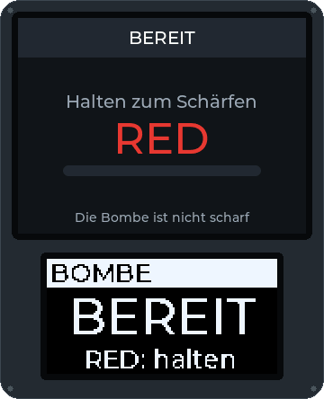
Bombe in Runden, bis die Spielzeit abläuft. Die Angreifenden machen die Bombe scharf, die Verteidigenden entschärfen sie. Eine Explosion ist ein Punkt für die Angreifenden, eine Entschärfung ein Punkt für die Verteidigenden; dann ruht die Box und die nächste Runde beginnt. Das Team mit mehr Punkten gewinnt.

Teams nehmen Boxen ein wie bei Domination, aber ein Team punktet nur, solange es alle Boxen gleichzeitig hält. Geht eine verloren, stoppt die Wertung.
Die Verteidigenden starten mit allen Zonen. Sobald sie nur noch ihre letzte haben, läuft ein Countdown bis zur Niederlage, bis sie eine andere zurückerobern; läuft er ab, gewinnen die Angreifenden.
Spielende tragen signierte NFC-Tags. Ein Team scannt die gesammelten Tags an einer Station: Ein gegnerischer Tag bestätigt den Kill, ein Tag aus dem eigenen Team verweigert ihn. Gefälschte Tags werden abgelehnt.
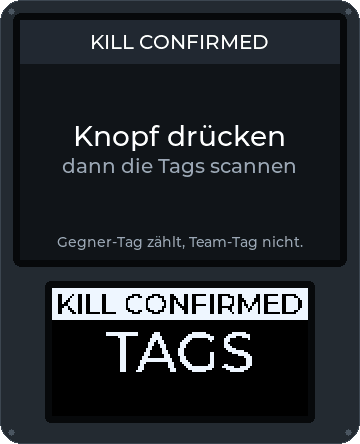
Ein Respawn-Punkt zählt Leben pro Team oder pro Person, mit einer Wartezeit zwischen zwei Respawns. Hat ein Team keine Leben mehr, ist es raus.
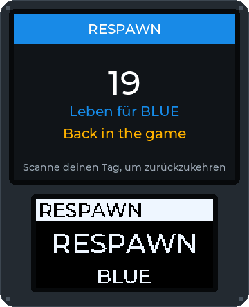
Spielende checken mit ihrem Tag an einem Checkpoint ein. Die Box zählt die Spielenden jedes Teams und kann für jeden Check-in Punkte geben.
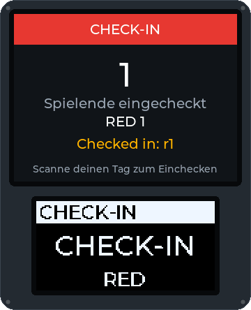
Neben jedem Modus: Wer getroffen wurde, scannt den eigenen Tag und hält einen Knopf eine festgelegte Zeit lang gedrückt, um geheilt zu werden. Das Kit zeigt, wie viele Heilungen es noch hat; jede Person bekommt pro Spiel an jedem Kit nur eine begrenzte Zahl, die Spielleitung füllt ein Kit von der Konsole aus auf, und jede Heilung erscheint im Log der Spielleitung und in der Ansicht der Spielenden.
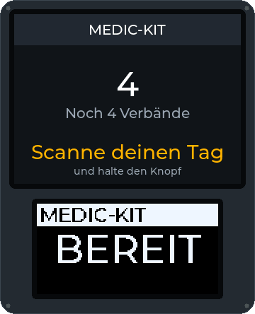
Teams nehmen eine Master-Box und ihre Satelliten ein. Nur der Master punktet, und jeder Satellit, den dasselbe Team hält, erhöht seine Punkte; wechselt der Master den Besitz, werden alle Satelliten wieder frei. In Software geschrieben und getestet, noch nicht auf echten Boxen gespielt.
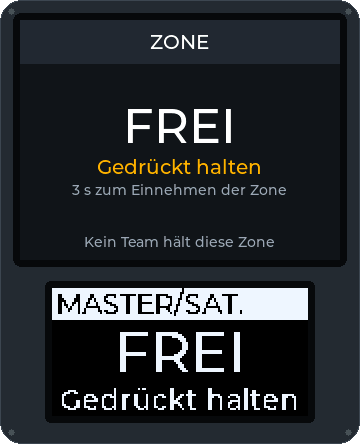
Eine Zielscheibe leuchtet ein paar Sekunden in der Farbe eines zufälligen Teams, und ein Treffer in dieser Zeit punktet für dieses Team. Das Spiel ist in Software geschrieben und getestet; das nötige Ziel-Addon (eine Platte mit Treffersensor und Leuchtring) ist noch nicht gebaut.
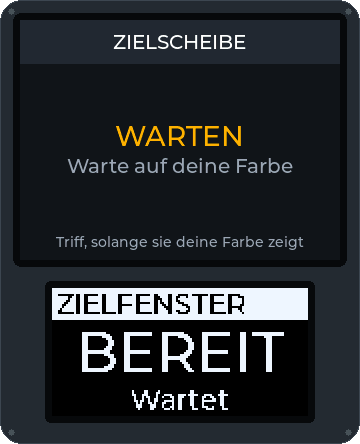
Ein Terminal stellt ein Rätsel auf seinem Tastenfeld: einen Code knacken anhand der Ziffern an der richtigen Stelle, die Drähte in der richtigen Reihenfolge durchtrennen oder eine Folge wiederholen. Eine falsche Antwort sperrt es eine Weile. Wer es löst, kann einen Code für ein anderes Ziel aufdecken, punkten und das Terminal halten, bis ein anderes Team es zurückhackt. In Software geschrieben und getestet, noch nicht auf einem Handy im Feld gespielt.
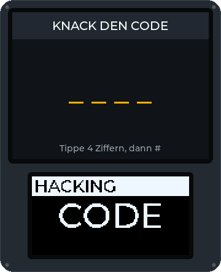
Ein Team eskortiert seinen VIP, eine Person, die ihre Position aus der App teilt, oder einen Payload, ein Handy mit GPS, in eine Extraktionszone; die anderen versuchen, das zu verhindern. Checkpoint-Boxen auf dem Weg punkten, solange ein Team sie hält. Positionen bleiben auf dem Feld-Controller und dem Handy; nur „extrahiert“ geht hinaus. In Software geschrieben und getestet, noch nicht mit echtem GPS gespielt.
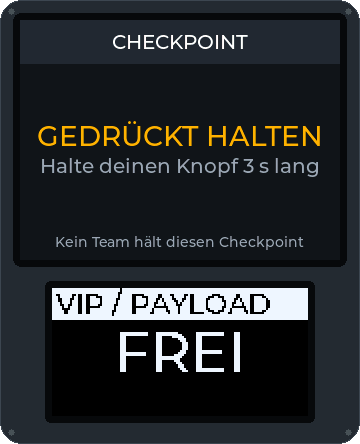
Teams nehmen Fabrik-Boxen ein, die Geld machen, solange sie sie halten. Wer spielt, sammelt es mit dem eigenen Tag an der Fabrik des eigenen Teams ein, trägt es über das Feld und zahlt es an einer Bank-Box ein, wo es Punkte bringt; der Feld-Controller merkt sich, was jede Person trägt, so kann das Geld an einer Box eingesammelt und an einer anderen eingezahlt werden. Wer an einem Medic-Kit geheilt wird, verliert das getragene Geld, und das erste Team, das das Ziel einzahlt, kann gewinnen. In Software geschrieben und getestet, noch nicht auf echten Boxen gespielt.
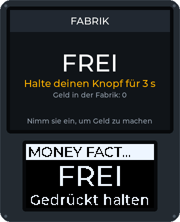
Mehrere Boxen, aber nur eine kann gleichzeitig eingenommen werden, und beide Teams erfahren, welche. Das Team, das die aktive Box hält, punktet für jede volle Minute; hat es sie lange genug gehalten, ist die Box für dieses Team abgeschlossen und gesperrt, und die nächste Box der Reihenfolge wird beiden Teams gemeldet. Die Reihenfolge ist die Liste der Spielleitung, die Box-Nummern oder zufällig; das Spiel endet mit der letzten abgeschlossenen Box oder wenn ein Team die Zielpunktzahl erreicht. In Software geschrieben und getestet, noch nicht auf echten Boxen gespielt.
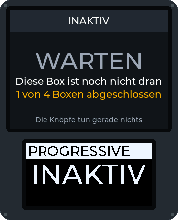
Läuft neben jedem Modus auf derselben Box: Codes am Tastenfeld bringen Punkte, Hinweise oder Freischaltungen, und die Spielleitung sieht, wer jeden Code benutzt hat und welches Team die Box hielt.
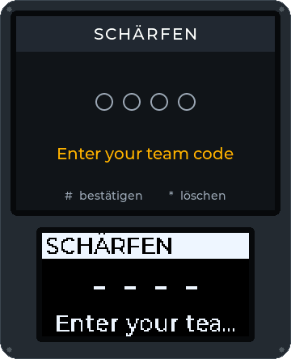
Money Factory, Capture the Flag, der eigene Modus deines Clubs… Modi sind kurze Skripte. Schlag einen mit der Vorlage für Spielmodus-Ideen vor oder teile einen fertigen als signiertes Paket in der Modus-Registry.